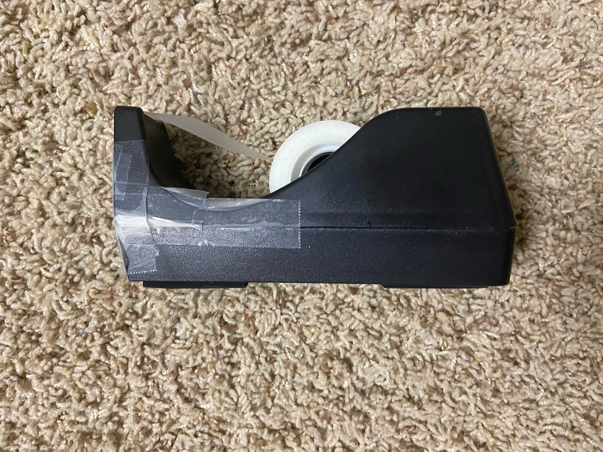

Test Image -
Output on Google Lens - "orange water bottle"
Output on Mobilenet - "water bottle"
Result - Google Lens was more accurate in recognizing this image
Test Image - 
Output on Google Lens - "fuse block"
Output on Mobilenet - "mouse, computer mouse"
Result - Neither one recognized this image correctly
Test Image - 
Output on Google Lens - "Redgragon RGB Gaming Mouse"
Output on Mobilenet - "mouse, computer mouse"
Result - Google Lens was more accurate in recognizing this image
Test Image -
Output on Google Lens - "Sklz Mini Hoop Ball"
Output on Mobilenet - "basketball"
Result - Google Lens was more accurate in recognizing this image
Test Image - 
Output on Google Lens - "Texas Instruments TI-30X IIS"
Output on Mobilenet - "cellular telephone, cellular phone, cellphone, cell, mobile phone"
Result - Google Lens was more accurate in recognizing this image